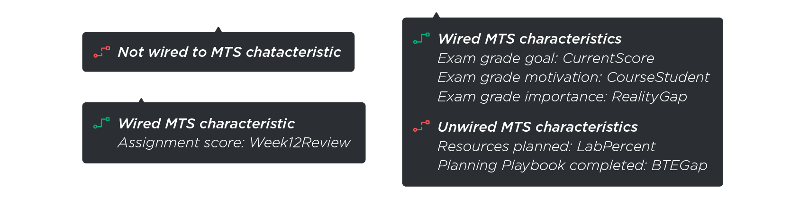

Improving user experience for a tailored communication system that creates personalized educational experiences.
What is ECoach?
ECoach is an educational message tailoring system that strives to create highly personalized learning experiences for students in large classes. According to Professor Tim McKay, the founder of ECoach, providing “the right information, at the right time, and in the right way to his students” is what he envisioned.
Since Summer 2020, I have been working on the project team as a User Experience Design Fellow. During that time, I worked on 3 design challenges and redesigned several aspects of the system to improve user experience.
Duration
Aug. 2020 - Jan. 2021
Type
Internship @ Umich Academic Innovation
Team
Project director, UX designer, behavioral scientists, content creator
My role
UX Design & Research
challenges
Users can perform the tasks, but...
1.
It takes many steps from login to the destination.
2.
The tags used in tables are not friendly to novice users
3.
Empty state message can be more fun and connected to brand identity
solutions
Challenge 1: Improving login flows for 5 types of users with different permission levels
Design goal
Less clicks and a more straightforward login experience
Before the new login flows were implemented, all users, including superusers, institutional managers, coach managers, coach assistants, and students went through unnecessary clicks to reach the page where they visit frequently.
User pain points
- Previous flow brought users back and forth between admin and student views
- Login flows do not have a consistent style for admin or student users
- Onboarding messages are not tailored to admin or student users
Design changes & decisions
To ease the burden, I first investigated how users with different permission levels interact with the system. With the user behavior data collected, I proposed recommended login flows to the team. The new flow was then implemented to more efficiently bring users to their destinations.
1. Merged previous ECoach Message and Edit Personal Information page and redesigned new Edit Personal Information page
*Affected all levels of users
Because the ECoach Message page did not provide much information or action options, I recommended merging the page with the Edit Personal Information page for all levels of users. To make sure verbal and visual messages were tailored to all users, I redesigned separate new Edit Personal Information pages with styles carried from the dashboard view and student views. I also rewrote the copy for different groups of users.
2. Brought Institution and Coach Level Dashboard views upfront
* Affected institution and coach level users
Institution and coach level users visit the dashboard often. However, the previous flow brought them to student views first and eventually arrived at the dashboard view after 5-6 additional clicks. Therefore, I suggested moving dashboard views right after the new Edit Personal Information page so that institution and coach level users can start their work faster.
3. Removed Landing page and Choose ECoach Institution page
*Affected all levels of users
Since Landing Page Login and Landing Page have almost the same content except for a “Let’s go” button, I decided to remove the latter. Moving institution level dashboard upfront allows institution level users to choose institutions from the dropdown menu immediately after Edit Personal Info page. Thus, having a separate page listing out all available institutions to browse was no longer necessary.
Final design: New user flow for all users
After the final version of the new user flow redesign was approved by my mentor, I presented the idea to our project director and the change was made available to all users.
Challenge 2: Redesigning characteristics and featured tags across all 4 tables
Design goal
User friendly UI that self-explains states of table items
ECoach allows admin users to tailor messages, assignments, exam playbooks, and surveys. However, feature tags and characteristic tags were not intuitive due to the visual styling and naming.
User pain points
I conducted 3 interviews with heavy users of the four tables addressed above. The users include 2 behavioral scientists and 1 content creator. The conversations helped me understand how people interact with the tables, their daily tasks, needs, and requests. User pain points located include:
- Using abbreviations “FEAT” and “CHAR” to represent “featured message” and “connected to MTS characteristics” did not make much sense.
- Previous “FEAT” and “CHAR” tags had the same styling that resembled a button, but was not clickable.
- The tags were not highlighted and thus it took users much effort to look for the “FEAT” and “CHAR” tags in the table.
Ideation
To highlight and distinguish “FEAT” and “CHAR” tags, I created multiple icons, UI elements, and tried out multiple color pairs to find the match that conveys the right message and different levels of urgency.
User tests & iterations
After creating several sets of icons and UI elements, I conducted a second-round interview with users to collect feedback on their preferences. Based on users’ input, I iterated on the UI designs.
Design changes & decisions
After more rounds of explorations and discussions with my mentor, I decided to finally go with the design that uses the megaphone icon to highlight featured items, and color-coded bars to display wired/partially wired/unwired status. When users hover over each row, they would get more information about what characteristics are wired to MTS and what are not.
1. Created icon for “FEAT” tag and icon + color-coded bars for “CHAR” tag
Implementing entirely different solutions for “FEAT” and “CHAR” tags aimed to help users better distinguish the tags.
2. Chose salmon red, orange, and seafoam-dark green to show different wired state
Using different colors to display status allows users to tell if an item is wired, partially wired, or unwired to MTS characteristics. I tried out multiple color solutions and chose the one that has the highest color contrast instead of the one that is most visually appealing in terms of aesthetics.
3. Added hover state with color-coded icons for “CHAR” tags
Previously, there weren’t hover states for “CHAR” tags. Thus, to find out what characteristics are wired and what are not, users have to take additional steps to confirm the details. Now, with hover states, users can clearly see a status summary without visiting the item details page.
Final design
The final design was approved by users we interviewed and was carried on to the process of development.

Challenge 3: Creating fun empty state of coaches that connects to brand identity
Design goal
Intuitive and informative empty state illustration and copy
Problem
Previous empty state of coaches was text-based, telling users that we are sorry for they are not in any coaches at the moment. This conveyed the right information, but was not ideal. The word “sorry” carries multiple meanings and could be misinterpreted. Visually, the message was straightforward but wasn’t connected to the brand identity.
Ideation & interactions
I collected UI pieces that related to the ECoach brand and recreated those to better match with the idea – “Empty state of coaches”.
Aside from recreating illustrations, I also redesigned the overall layout and adjusted the copy to make the message stand out more to student users.

Final design
My two mentors and I voted on our favorites of the redesigns. The one with a Sweatpants Guy on the bottom-left corner of a simplified coach card was on the top of our picks. To ensure the copy “No data found” stands out to student users, I used one of the dark colors in our style guide – teal-darkest for our title copy.

reflection
What I learned
ECoach is a massive system having five permission levels and various tailoring methods. I started off the tasks underestimating efforts needed before I could even begin to brainstorm, ideate, and design. There were times when I felt like one of the blind men with the elephant. I thought I understood what a great login experience should look like, but I failed to consider all levels of permission. I assumed it would be a simple solution to apply two new icons to replace the feature tag and characteristic tag, but overlooked how complicated the tables were already. Thanks to my mentor, Kristen’s guidance, I was able to get a thorough understanding of how the complex system works. And that helped me make better design decisions.